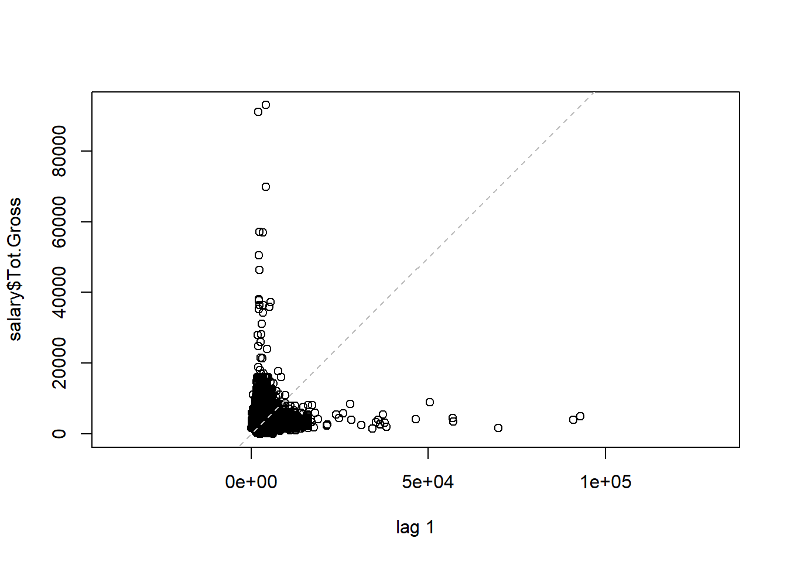
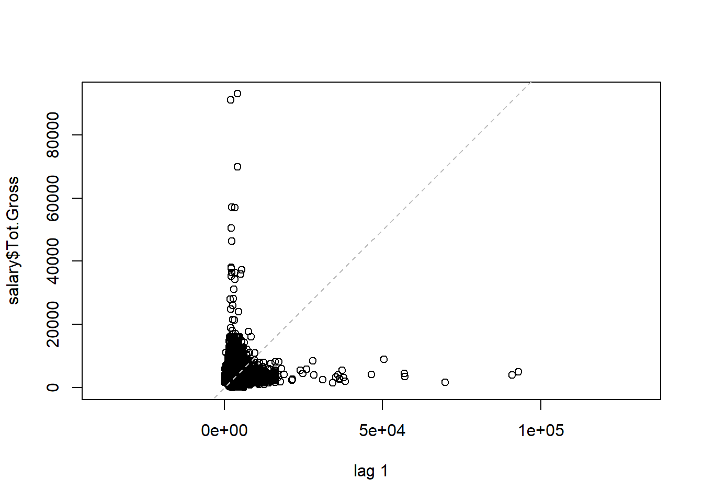
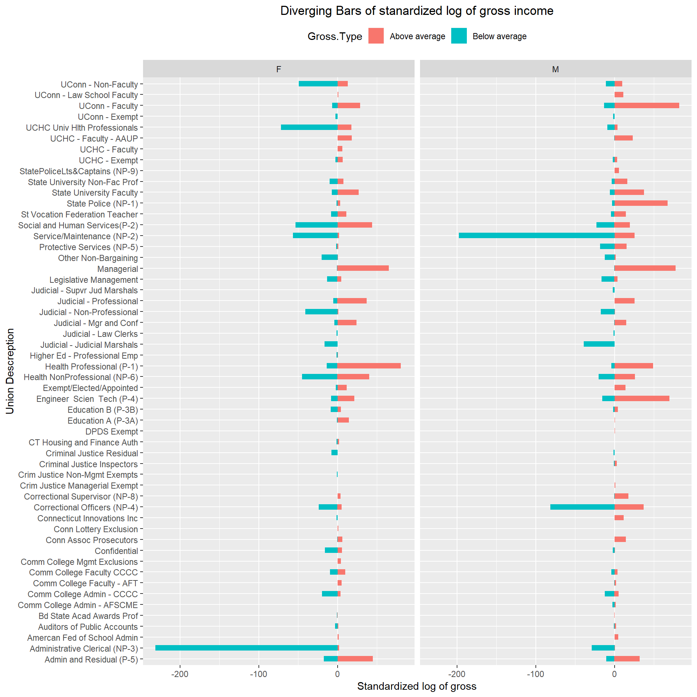
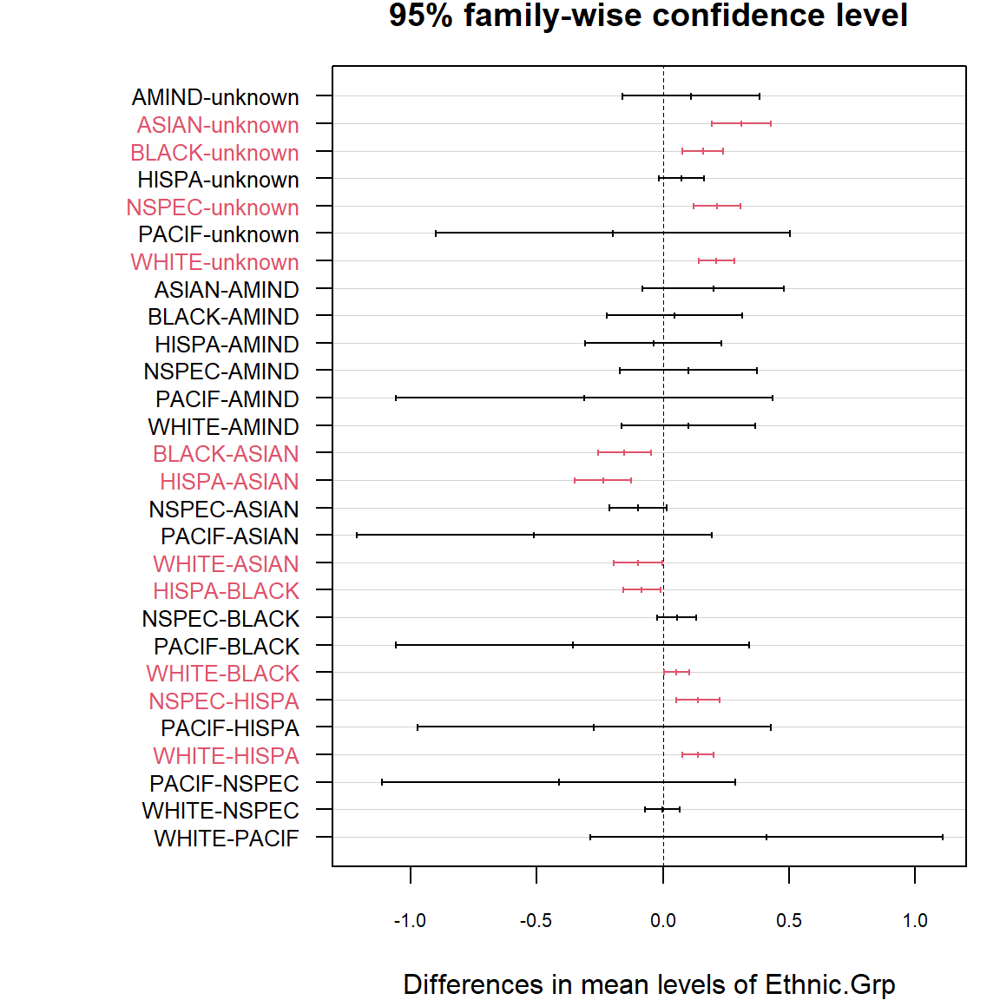

Chapter 10 The messy salary data
This original salary data set is taken from the Payroll Data from online “https://data.ct.gov/Government/State-Employee-Payroll-Data-Calendar-Year-2015-thr/virr-yb6n/data”, Which includes the payment information from Calendar Year 2015 to the most recent pay period for Connecticut state employees. We take the subset only for the 2017 fiscal year, which includes more than 1.77 million observations, 38 variables, and 102,101 employees. For convenience, we randomly took 8500 employees from this subset as our focused data set (“state_empoyee_salary_data_2017.csv”). We are interested in those full-time employees who got 26 paychecks in the 2017 fiscal year. The relationships between income and other variables like age, sex, ethnic, union, and so on are analyzed.
First, let’s clean our sampled data set.
10.1 Read in and clean data
raw0 is the subset only for 2017 fiscal year, seperated from the original whole dataset and saved as CSV file previously. Here we only show how we get the subset “raw” of sampled 8500 employee which can be found in our dataset file.
raw0 <- read.csv("datasets/State_Employee_Payroll_Data_Calendar_Year_2017.csv")
sample <- sample(employID, 8500) # Randomly take 8500 employees
raw <- raw0[raw0$EmplId.Empl.Rcd %in% sample, ] %>% droplevels() # Get focus data set
str(raw)
write.csv(raw, file = "datasets/state_employee_salary_data_2017.csv", row.names = FALSE) From the sampled data set, We will only pick full-time employees and focus on the interested variables such as different incomes, Age, Sex, Ethnic, Union description, and so on.
library(dplyr)
raw <- read.csv("datasets/state_employee_salary_data_2017.csv")
raw1 <- filter(raw, Full.Part == "F") # Pick full time employee
raw2 <- raw1[, -c(1:2, 5:9, 11:12, 19:23, 31:33, 35:36)] # Keep only the interested variablesFactorize the categorical variables.
raw2$EmplId.Empl.Rcd <- as.factor(raw2$EmplId.Empl.Rcd)
raw2$Sex <- as.factor(raw2$Sex)
raw2$Ethnic.Grp <- as.factor(raw2$Ethnic.Grp)
raw2$Union.Descr <- as.factor(raw2$Union.Descr)We remove the variables we are not interested in. Now we will check the situation of employees.
EmplId.Empl.Rcd <- as.character(raw2$EmplId.Empl.Rcd)
counts <- data.frame(table(EmplId.Empl.Rcd))
PersonOccurCount <- table(counts[, 2])
plot(PersonOccurCount, col = rainbow(30),
xlab = "Occurance of employee", ylab = "Count of employee")
Figure 10.1: Situation of check occurance of employees.
The most employee-occurrence is 26. We will focus on the employees who have 26 paychecks for whole year in 2017.
subEmpl26 <- counts[which(counts$Freq != 26), ]
len <- length(subEmpl26$EmplId.Empl.Rcd)
for (i in 1:len) {
j <- which(raw2$EmplId.Empl.Rcd == as.character(subEmpl26$EmplId.Empl.Rcd)[i])
if (i == 1) {
id = j
} else if (i > 1) {
id = c(id, j)
}
}
raw26 <- raw2[-id, ] # remove employees with check count not equal 26We removed employees with check-count unequal to 26.
Check.Dt <- gsub(" 12:00:00 AM", "", raw26$Check.Dt)
counts <- table(Check.Dt)
barplot(counts, col = rainbow(26), axis.lty = 1, xlab = "Check Date", ylab = "Count")
Figure 10.2: The counts of checks for check date in 2017.
The counts of checks for bi week almost the same, which means the employees kept same all the time in 2017 except 03/08/2017. We will remove the employee in this check date.
empl38 <- raw26[which(raw26$Check.Dt == "03/08/2017 12:00:00 AM"), ]
raw26 <- raw26[-which(raw26$EmplId.Empl.Rcd == empl38$EmplId.Empl.Rcd), ]Now we check the situation whether different genders are indexed for same employee.
df <- raw26 %>%
group_by(EmplId.Empl.Rcd, Sex) %>%
summarise(Total.Gross = sum(Tot.Gross ))
dupliSex <- df[duplicated(df$EmplId.Empl.Rcd), ] # Data frame for sex duplication obs.
nrow(dupliSex) # Row count for data frame## [1] 0With zero rows of sex duplication observation, we conclude that no employee has different sex recorded. We will check whether sex “U” employee is still in our data.
## [1] 0There is no sex “U” employee among those who got 26 pay checks in 2017 fiscal year. They were already removed in previous steps. Then we will check about the duplication situation of ethnic groups.
df <- raw26 %>%
group_by(EmplId.Empl.Rcd, Ethnic.Grp) %>%
summarise(Total.Gross = sum(Tot.Gross ))
dupliEthnic.Grp <- df[duplicated(df$EmplId.Empl.Rcd), ] # Data frame for Ethnic duplication obs.
nrow(dupliEthnic.Grp) # Row count for data frame## [1] 0Zero row of Ethnic duplication observation tells us that there is no different ethnic record for the same employee.
Now we notice that some employees even have gross income or biweekly rate less than zero. We consider to remove those employees.
salary <- raw26
subGross0 <- salary[which(salary$Tot.Gross <= 0 | salary$Bi.Weekly.Comp.Rate <= 0), ]
len <- length(unique(subGross0$EmplId.Empl.Rcd))
for (i in 1:len) {
j <- which(salary$EmplId.Empl.Rcd == unique(subGross0$EmplId.Empl.Rcd)[i])
if (i == 1) {
id = j
} else if (i > 1) {
id = c(id, j)
}
}
# Remove employees with negative or zero Tot.Gross and Bi.Weekly.Comp.Rate
salary <- salary[-id, ] The employees with negative or zero Tot.Gross and biweekly rates are removed. Now let’s check the distribution of total gross.
 

Figure 10.3: Scatterplot and lagplot of total gross income.
Both scatter plot and lag plot show that most total gross salary points scatter under $20000, some of them are even above $60000.
We will not keep those employees with Job.Indicator as “S” too.
subIndicator <- salary[which(salary$Job.Indicator == "S"), ]
len <- length(unique(subIndicator$EmplId.Empl.Rcd))
for (i in 1:len) {
j <- which(salary$EmplId.Empl.Rcd == unique(subIndicator$EmplId.Empl.Rcd)[i])
if (i == 1) {
id = j
} else if(i > 1) {
id = c(id, j)
}
}
salary <- salary[-id, ] # Remove employees with Job indicator as "S"Employees with Job indicator as “S” are moved. We also will not consider those employees with duplicated union descriptions.
df <- salary %>%
group_by(EmplId.Empl.Rcd, Union.Descr) %>%
summarise(Total.Gross = sum(Tot.Gross ))
dupliUnion <- df[duplicated(df$EmplId.Empl.Rcd), ]
len <- length(dupliUnion$EmplId.Empl.Rcd)
for(i in 1:len){
j <- which(salary$EmplId.Empl.Rcd == dupliUnion$EmplId.Empl.Rcd[i])
if (i == 1) {
id = j
} else if (i > 1) {
id = c(id, j)
}
}
salary <- salary[-id, ] # remove employees with different Union descriptionFinally, we cleaned our data according to our interest and we will group our left observations according to employee ID “EmplId.Empl.Rcd”, and just select variables like sex, ethnic group, union description, age, total gross, and biweekly rate. We take round for age of each employee.
salary <- salary %>%
group_by(EmplId.Empl.Rcd, Sex, Ethnic.Grp, Union.Descr) %>%
summarise(Age = round(mean(Age), 0), Tot.Gross = mean(Tot.Gross),
Bi.Weekly.Rate = mean(Bi.Weekly.Comp.Rate)) %>%
group_by(EmplId.Empl.Rcd) %>%
filter(n() == 1) %>%
droplevels()
str(data.frame(salary))## 'data.frame': 3441 obs. of 7 variables:
## $ EmplId.Empl.Rcd: Factor w/ 3441 levels "00034CF9004E4E0D7872FEB52CB5933F",..: 1 2 3 4 5 6 7 8 9 10 ...
## $ Sex : Factor w/ 2 levels "F","M": 1 1 2 1 1 2 2 1 1 2 ...
## $ Ethnic.Grp : Factor w/ 8 levels "","AMIND","ASIAN",..: 8 8 8 8 8 8 6 5 8 8 ...
## $ Union.Descr : Factor w/ 54 levels "Admin and Residual (P-5)",..: 9 2 7 24 24 43 35 41 37 44 ...
## $ Age : num 73 64 65 54 50 46 71 47 52 48 ...
## $ Tot.Gross : num 4176 1799 1935 2751 2195 ...
## $ Bi.Weekly.Rate : num 3995 1776 1931 2713 2195 ...There is one level marked as “” in ethnic group, which means unknown for us.
We replace level of empty space in Ethnic.Grp as “unknown”.
## EmplId.Empl.Rcd Sex Ethnic.Grp
## 00034CF9004E4E0D7872FEB52CB5933F: 1 F:1804 WHITE :2101
## 001D621CF1C85C8F46EFD935CD685BFD: 1 M:1637 BLACK : 485
## 004C3FFCCFC10A09D65CA3DF60CB69FD: 1 HISPA : 283
## 0059143835BC7A37482ABF4B933A4642: 1 NSPEC : 236
## 0059CD55728E16BC6BCFD35EDBA9DA32: 1 unknown: 211
## 007CE08D82395FFD546943D382911009: 1 ASIAN : 109
## (Other) :3435 (Other): 16
## Union.Descr Age Tot.Gross
## Service/Maintenance (NP-2) : 299 Min. :22.00 Min. : 568.7
## Correctional Officers (NP-4) : 289 1st Qu.:40.00 1st Qu.: 2414.2
## Social and Human Services(P-2): 263 Median :49.00 Median : 3041.0
## Administrative Clerical (NP-3): 252 Mean :47.71 Mean : 3222.5
## Admin and Residual (P-5) : 214 3rd Qu.:56.00 3rd Qu.: 3754.7
## Health Professional (P-1) : 198 Max. :81.00 Max. :17530.3
## (Other) :1926
## Bi.Weekly.Rate
## Min. : 25.78
## 1st Qu.: 2145.94
## Median : 2656.14
## Mean : 2894.14
## 3rd Qu.: 3443.95
## Max. :12884.62
## Now 3441 employees are included in our data set. These employees include both males and females, aged from 22 to 81, group into 8 different ethnicities. They belong to 54 different Unions. The minimum total gross is $568.7 and the maximum is $17530.3. The biweekly rate ranges from $25.78 to $12884.62.
As for this salary data, we will focus on the total gross income of these state employees. We are interested in the points such as: How about the distribution of the total gross income? Are males and females paid equally? Is there any difference in total gross for different ages and age groups? Do some ethnic groups get better payment than others? What’s the most important factor affecting the gross income of these state employees?
First, let’s see the information of these variables.
10.2 Information about the variables
10.2.1 Income and age
From the pre-analysis of total gross(Figure 10.3), we know that “Tot.Gross” is not scattered randomly. We need to transform total gross first.
variable <- c("Tot.Gross", "Gross.Log", "Age") # Pick up the numeric columns
par(mfrow = c(3, 2)) # Layout in 3 rows and 2 columns
for (i in 1:length(variable)){
sub <- unlist(salary[variable[i]])
submean <- mean(sub)
hist(sub, main = paste("Hist. of", variable[i], sep = " "), xlab = variable[i])
abline(v = submean, col = "blue", lwd = 1)
qqnorm(sub, main = paste("Q-Q Plot of", variable[i], sep = " "))
qqline(sub)
if (i == 1) {
s.t <- shapiro.test(sub)
} else {
s.t <- rbind(s.t, shapiro.test(sub))
}
}
Figure 10.4: Histogram and QQ plot for total gross, log of gross and age.
s.t <- s.t[, 1:2] # Take first two columns of shapiro.test result
s.t <- cbind(variable, s.t) # Add variable name for the result
s.t## variable statistic p.value
## s.t "Tot.Gross" 0.840075 2.490722e-50
## "Gross.Log" 0.9888379 7.88885e-16
## "Age" 0.9848966 1.023745e-18Tot gross is not statistically normally distributed. It’s extremely left-skewed distributed.
The distribution of Gross.Log, transformation of Tot.Gross is closer to normality than Tot.Gross.
The highest frequency employees are aged between 45 and 50 years old. The distribution of age is close to the bell shape.
Shapiro tests deny the normality of all these three numeric variables, though we assume they are normally distributed in our analyses.
10.2.2 Ethnic group
library(ggplot2)
counts <- data.frame(sort(table(salary$Ethnic.Grp), decreasing = TRUE))
perc <- paste(round(counts$Freq/sum(counts$Freq), 2)*100, "%", sep = "")
ggplot(counts, aes(x = reorder(Var1, Freq), y = Freq)) +
geom_bar(stat = 'identity', fill = rainbow(8)) +
geom_text(aes(x = c(8:1), y = Freq + 100 , label = perc), size = 3.5) +
labs(x = 'Ethnic Group', y = 'Freqency', title = 'Ethnic group by count') +
theme_bw() + # Classic dark-on-light
coord_flip() + # Flip the plot
theme(plot.title = element_text(hjust = 0.5)) 
61% of state employees are white, 14% are black. AMIND and PACIF are very limited.
10.2.3 Sex
library(plotrix)
counts <- sort(table(salary$Sex), decreasing = TRUE)
# Labels with count number and percentage
p <- paste(round(counts/sum(counts), 2)*100, "%", sep = "")
lbls <- paste(names(counts), "\n", counts, p, sep = " ")
pie3D(counts, labels = lbls, explode = 0.05,
main = "Pie chart of sex", labelcex = 1.0, labelpos = c(1.8, 5.0))
There are around 4% more females than males in the state employees.
10.2.4 Union descreption
top10Union <- data.frame(sort(table(salary$Union.Descr), decreasing = TRUE)[1:10]) # By count
names(top10Union)[1] <- "Union.Descr"
topUnion <- salary %>%
group_by(Union.Descr) %>%
summarise(Avg.Gross.Log = round(mean(Gross.Log), 3)) %>%
arrange(desc(Avg.Gross.Log)) %>%
head(10) #by average gross sales
df <- data.frame(top10Union, topUnion)
names(df)[1]<- "Top unions by count"
names(df)[3]<- "Top unions by log of gross"
library(knitr)
kable(df, booktabs = TRUE, caption = "Top unions by count and average log value of gross")| Top unions by count | Freq | Top unions by log of gross | Avg.Gross.Log |
|---|---|---|---|
| Service/Maintenance (NP-2) | 299 | UCHC - Faculty - AAUP | 8.927 |
| Correctional Officers (NP-4) | 289 | UCHC - Faculty | 8.710 |
| Social and Human Services(P-2) | 263 | Comm College Mgmt Exclusions | 8.693 |
| Administrative Clerical (NP-3) | 252 | UConn - Law School Faculty | 8.605 |
| Admin and Residual (P-5) | 214 | Amercan Fed of School Admin | 8.523 |
| Health Professional (P-1) | 198 | Connecticut Innovations Inc | 8.511 |
| Health NonProfessional (NP-6) | 189 | Exempt/Elected/Appointed | 8.510 |
| Engineer Scien Tech (P-4) | 181 | StatePoliceLts&Captains (NP-9) | 8.473 |
| UCHC Univ Hlth Professionals | 121 | Managerial | 8.416 |
| Managerial | 119 | Crim Justice Managerial Exempt | 8.389 |
The top three unions by count are Service Maintain, Correctional officers, and Social & Human Services. While according to the average gross, the first three are all come from university or college. Except for Managerial, the top 10 unions by count are totally different from top 10 unions by the average gross.
10.3 Analysis of gross income
10.3.1 Age
p1 <- salary %>%
group_by(Age) %>%
summarise(Avg.Gross = mean(Tot.Gross)) %>%
ggplot(aes(x = Age, y = Avg.Gross)) +
geom_bar(stat = 'identity', col = "lightblue", fill = "blue") +
scale_x_continuous(breaks = seq(20, 90, 10)) +
labs(y = "Average gross income")
# p2 get density2D plot
p2 <- ggplot(salary, aes(x = Age, y = Gross.Log)) +
stat_density2d(aes(fill = ..density..^0.25), geom = "tile", contour = FALSE, n = 200) +
scale_fill_continuous(low = "white", high = "dodgerblue3") +
scale_x_continuous(breaks = seq(10, 100, 10)) +
scale_y_continuous(breaks = seq(2, 12, 1)) +
theme(legend.position = "none", panel.background = element_blank())
# display p1 and p2 in same row
library(gridExtra)
grid.arrange(p1, p2, nrow = 1)
Figure 10.5: Average gross and log of gross distribution by age.
In total, the older the employees are, the more they earn. They average gross income are around 3000. The density plot shows lots of employees have a log gross of income around 8.
Now we separate age into groups with age gap of 10.
stat <- salary %>% group_by(Age.) %>% summarise(Avg.Gross.Log = mean(Gross.Log))
ggplot() +
geom_boxplot(data = salary, aes(x = Age., y = Gross.Log, fill = Age.)) +
geom_point(data = stat, aes(x = Age., y = Avg.Gross.Log), color = "brown") +
geom_text(data = stat,
aes(label = round(Avg.Gross.Log, 2), x = Age., y = Avg.Gross.Log - 0.1))Figure 10.6: Distribution of log of gross by age group.
With every 10 years of age increasing, the log values of gross increase step by step except age group 80-90.
## Df Sum Sq Mean Sq F value Pr(>F)
## salary$Age. 6 33.0 5.500 54.53 <2e-16 ***
## Residuals 3434 346.4 0.101
## ---
## Signif. codes: 0 '***' 0.001 '**' 0.01 '*' 0.05 '.' 0.1 ' ' 1With p-value of much less than 0.05, we reject the null hypothesis that there is no significant difference among these means of log value of gross income for different age groups, which means there is at least one of the means of log value of gross income is different from the others.
library(agricolae)
# LSD.test needs to provide degrees of freedom and mean square for errors. We can get it from aov.
res <- LSD.test(salary$Gross.Log, salary$Age.,
DFerror = model$df.residual, MSerror = anova(model)[["Mean Sq"]][2])
res$groups## salary$Gross.Log groups
## [70,80) 8.284744 a
## [60,70) 8.122599 b
## [50,60) 8.068892 c
## [40,50) 8.032668 d
## [30,40) 7.913289 e
## [20,30) 7.756642 f
## [80,90) 6.343428 gFrom the information of pairwise comparison, the total different alpha-beta index indicates that these 8 age groups are significantly different from each other in mean log value of total gross income. The elder the age, the higher the log value of gross income, except for the age group between 80 and 90, which has the lowest mean log gross income comparing with all other age groups.
library(scales)
library(plotly)
p <- salary %>%
group_by(Union.Descr, Age) %>%
summarise(Avg.Gross = mean(Gross.Log)) %>%
arrange(desc(Avg.Gross)) %>%
ggplot(aes(x = Age, y = Avg.Gross, fill = Union.Descr)) +
geom_bar(stat = "identity", position = "fill") +
scale_y_continuous(labels = percent_format()) +
scale_x_continuous(breaks = seq(10, 100, 10)) +
labs(y = "Percentage") +
theme(panel.background = element_rect(fill = "black"),
panel.grid.major = element_blank(), panel.grid.minor = element_blank())
ggplotly(p)Figure 10.7: Percentage of union descriptions by age group.
This is the distribution of average gross percentage of Union Descriptions by age group. By using a mouse we can find out the information of percentage occupation of union description for a certain age. For example, for age 22, Administrative Clerical, Exempt/Elected/Appointed, Service/Maintenance and UCHC Univ Hlth Professional these four unions share the total Log of gross almost equally, while for age 81, the only union is Legislative Management.
10.3.2 Sex
par(mfrow = c(1, 2))
# Density plot for each sex
df1 <- salary[which(salary$Sex == "F"), ]
df2 <- salary[which(salary$Sex == "M"), ]
plot(density(df1$Gross.Log), col = "red", xlab = "Log of Gross",
main = "Density plot for each sex")
lines(density(df2$Gross.Log), col = "blue") # Add density line of df2 to density plot of df1
legend("topright", c("M","F"), lty = c(1, 1), col = c("blue", "red")) # Add legend
# LSD comparison for sex grouop
model <- aov(salary$Gross.Log~salary$Sex)
res <- LSD.test(salary$Gross.Log, salary$Sex,
DFerror = model$df.residual, MSerror = anova(model)[["Mean Sq"]][2])
gross <- round(res$groups[, "salary$Gross.Log"], 2)
plot(res, xlab = "Sex Group", ylab = "Range between max and min",
main = "Sex groups and variation range")
text(x = c(seq(from = 1, to = 10, by = 1.2)), y = 8, gross)
Figure 10.8: Log of gross comparison by sex group.
Density plot shows the blue male line is later than the red female line, which means male has a bigger log of gross than female in total. The density peak of the female group is earlier than the male group also tell the same story. The total different alpha-beta index indicates that these 2 sex groups are significantly different from each other in the mean log of gross, males get higher gross income than females.
# p1 produce the point and line plot
p1 <- salary %>%
group_by(Ethnic.Grp, Sex) %>%
summarise(Avg.Gross = mean(Gross.Log)) %>%
ggplot(aes(x = Ethnic.Grp, y = Avg.Gross, colour = Sex, group = Sex)) +
geom_line(size = 1) +
geom_point(size = 4, shape = 19) +
theme(axis.text.x = element_text(angle = 45, hjust = 1),
panel.grid.major = element_blank(),
legend.position = "bottom") +
labs(x = "Ethnic Group", y = "Average Gross Log")
# p2 produce the density ridge plot
library(ggridges)
p2 <- salary %>% group_by(Ethnic.Grp, Sex) %>%
ggplot(aes(x = Gross.Log, y = Ethnic.Grp, fill = Sex)) +
geom_density_ridges(alpha = 0.55) +
theme(legend.position = "bottom") +
xlim(6.0, 10.0)
# Lay out p1 and p2 in same row
library(gridExtra)
grid.arrange(p1, p2, nrow = 1)Figure 10.9: Log of gross comparison by ethnic and sex group.
Both plots tell us that for other ethnic groups except Asian, the male has a higher average log gross than the female. On average, Asian females earn similar as males. Amind males have much bigger log of gross than Amind females. From the left point-line plot, we can see the same situation for Pacif ethnic: Pacif males have much bigger log of gross than Pacif females. Because of the tiny amount of PACIF employees, there is no ridge showing in the right density-ridge plot.
# Standardize Gross.Log first. Separate into two groups "Below average" and "Above average"
Sd.Gross <- round((salary$Gross.Log - mean(salary$Gross.Log)) / sd(salary$Gross.Log), 2)
Gross.Type <- ifelse(Sd.Gross < 0, "Below average", "Above average")
Sex <- salary$Sex
Category <- salary$Union.Descr
df <- data.frame(Category, Sd.Gross, Gross.Type, Sex)
ggplot(df, aes(x = Category, y = Sd.Gross)) +
geom_bar(stat = 'identity', aes(fill = Gross.Type), width = .5) +
facet_wrap(~ Sex) + # Arranges panels according to sex
labs(x = "Union Descreption", y = "Standardized log of gross") +
coord_flip() + # Horizontal plot
theme(legend.position = "top")
Figure 10.10: Diverging bars of stanardized log of gross income.
From the figure we can see that for both male and female, the pattern of above and below average for almost all of the union descriptions are similar. The only difference is the difference in total standardized log value of gross for male and female. For example, for union UCHC Univ Hlth Professionals on top, administrative Clerical on the bottom and other two unions like service/maintenance and Correctional Officers, all these four unions have more standardized log value of gross below average, which means these four are relatively low pay unions. At the same time, female UCHC Univ Hlth Professionals, administrative Clerical and male service/maintenance and Correctional Officers get this log value less comparing with the other gender in the same union, which may be explained that more females work in Univ Hlth Professionals, administrative Clerical union, while more males work as service/maintenance and Correctional Officers. On the other hand, union Uconn Faculty, Engineer Scien Tech, Health professional and Judicial Professional have more standardized log value of gross above average, which means they are good pay union. Maybe there are fewer female Uconn Faculty and Engineer Scien Tech, and fewer male Health Professional and Judicial Professional because these combinations get less positive log value than the other gender in the same union.
10.3.3 Ethnic Group
# Bar plot with error bar for different ethnic group
p1 <- salary %>%
group_by(Ethnic.Grp) %>%
summarise(mean = mean(Gross.Log),
sd = sd(Gross.Log),
se = sd(Gross.Log)/sqrt(n())) %>%
ggplot(aes(x = Ethnic.Grp, y = mean, color = Ethnic.Grp, fill = Ethnic.Grp)) +
geom_bar(stat = "identity") +
geom_errorbar(aes(ymin =mean - se, ymax =mean + se), color = "black", width = 0.3) +
theme(axis.text.x = element_text(angle = 45, hjust = 1))
# Density ridges for different ethnic group
library(ggridges)
p2 <- salary %>% group_by(Ethnic.Grp) %>%
ggplot(aes(x = Gross.Log, y = Ethnic.Grp, color = Ethnic.Grp, fill = Ethnic.Grp)) +
geom_density_ridges(alpha = 0.5) +
xlim(6.0, 10.0) +
coord_flip() +
theme(legend.position = "none")
# Display two plots in same row
grid.arrange(p1, p2, nrow = 1)Figure 10.11: Bar and density ridge plot of log of gross by ethnic.
From the bar figure we can see that Asian, Nspec, and White have relatively high gross incomes, Pacif and unknown get lower gross incomes. There is no big difference of variance for all other ethnic groups but Pacif, next Amind. Density ridge plot shows White, Asian, and Nespec have THE biggest density above log of gross of 8.5, while unknown, Amind and Hispa have more density below 8. Ethnic Black’s density keepS even at both sides of log of gross of 8. At the same time, ethnic groups of white, black, and unknown have relatively symmetrical density distribution; Asian and Nespec have upper skewed density; While AMIND and HISPA have lower skewed density.
# Get ethnic order according to the frequency of count
CountEthnic <- data.frame(sort(table(salary$Ethnic.Grp), decreasing = TRUE))
# Get ethnic order according log of gross income
GrossEthnic <- salary %>%
group_by(Ethnic.Grp) %>%
summarise(Avg.Gross = mean(Gross.Log)) %>%
arrange(desc(Avg.Gross)) %>%
pull(Ethnic.Grp)
# build data frame for rank of these two ethnic order
EthnicGroup <- unlist(list(CountEthnic[, 1], GrossEthnic))
Rank <- rep(1:8, 2)
EthnicType <- rep(c("CountEthnic","GrossEthnic"), each = 8)
dat <- data.frame(Rank, EthnicType, EthnicGroup)
# point plot two set of ethnics according rank and connect same ethnic by line
ggplot(dat, aes(y = Rank, x = EthnicType, label = EthnicGroup, group = EthnicGroup) )+
geom_line(size = 1) +
geom_point(aes(color = EthnicGroup), size = 5) +
scale_y_continuous(breaks = seq(0, 10, 1)) +
annotate("text", x = 0.7, y = Rank[1:8], label = EthnicGroup[1:8], hjust = 0, cex = 3.5) +
annotate("text", x = 2.1, y = Rank[9:16], label = EthnicGroup[9:16], hjust = 0, cex = 3.5) 
Figure 10.12: Ethnic rank plot by count and log of gross.
According to count, most of the state employees are white and Black. Hispa and Nspec occupy the third and fourth in the list. By average log of gross, the first Ethnic group is Asian, then Nspec and White. Black is in 4th place by gross. Pacif keeps the last for both count and average log gross rank.
model <- aov(Gross.Log ~ Ethnic.Grp, data = salary)
tukey <- TukeyHSD(model)
par(mar = c(4, 10, 2, 1))
psig <- as.numeric(apply(tukey$Ethnic.Grp[, 2:3], 1, prod) >= 0) + 1
plot(tukey, col = psig, las = 1, cex.axis = 0.7, yaxt = "n")
for (j in 1:length(psig)){
axis(2, at = j,labels = rownames(tukey$Ethnic.Grp)[length(psig) - j + 1],
las = 1, cex.axis = .8, col.axis = psig[length(psig) - j + 1])
}
There is no significant difference between the means of log gross for black pairs but for the red pairs in plot, such as unknown with Asian, Black, Nspec and White; Asian with Black, Hispa and White; Black with Hispa and White; Hispa with Nespa and White.
ggplot(salary, aes(x = Age, y = Gross.Log, colour = Sex, shape = Sex)) +
geom_point() +
ggtitle("Scatterplot of log of gross vs Age by Sex and Ethnic") +
facet_wrap(~ Ethnic.Grp) + # Arrange panels by Ethnic Group
geom_smooth(aes(colour = Sex), method = 'lm',formula = y ~ x) + # Add the regression line
theme(plot.title = element_text(hjust = 0.5), legend.position = c(0.85, 0.15))
In our data set, we have much more employees in white, but very little in Pacif. For both male and female, with the increase in age, log of gross increase slightly for all other ethnic groups but Nspec. For most ethnic groups, male and female have a similar pattern for the relationship between age and log of gross. For ethnic unknown and Amind, male’s log of gross increase faster than female, but for Asian, male’s log of gross increase slower than female.
10.4 Analysis of gross income type
10.4.1 Gross Type
According to the average log of gross for each employee, we separate the employees into three groups: High.Gross with average log of gross greater than 8.5, Middle.Gross with average log of gross between 7.8 and 8.5, and Low.Gross with average log of gross equal or less than 7.8.
# Regroup gross by average log of gross for each EmplId.Empl.Rcd as Gross.Type
High.Gross <- as.vector(salary$EmplId.Empl.Rcd[which(salary$Gross.Log > 8.5)])
Middle.Gross <- as.vector(salary$EmplId.Empl.Rcd[which(salary$Gross.Log > 7.8)])
salary <- salary %>%
mutate(Gross.Type =
ifelse(EmplId.Empl.Rcd %in% High.Gross, "High",
ifelse(EmplId.Empl.Rcd %in% Middle.Gross, "Middle",
"Low")))For each gross type, we try to get information about total number of observation, percentage, employee number, average log of gross, average of total gross and standardized total gross.
library(janitor)
df1 <- salary %>%
group_by(Gross.Type) %>%
tabyl(Gross.Type)
df2 <- salary %>%
group_by(Gross.Type) %>%
summarise(Avg.Log.Gross = mean(Gross.Log), Avg.Tot.Gross = mean(Tot.Gross))
df <- merge(df1, df2, by="Gross.Type") %>%
arrange(desc(Avg.Log.Gross))
df <- round(df[, 2:5], 2) # round all numeric variables to decimal 2
Gross.Type = c("High, Gross.Log>8.5", "Middle, Gross.Log>7.8", "Low, Gross.Log<=7.8")
df <- cbind(Gross.Type, df)
kable(df, booktabs = TRUE, caption = "Table of gross type")| Gross.Type | n | percent | Avg.Log.Gross | Avg.Tot.Gross |
|---|---|---|---|---|
| High, Gross.Log>8.5 | 217 | 0.06 | 8.72 | 6307.37 |
| Middle, Gross.Log>7.8 | 2329 | 0.68 | 8.11 | 3379.69 |
| Low, Gross.Log<=7.8 | 895 | 0.26 | 7.62 | 2065.61 |
df$Gross.Type <- factor(df$Gross.Type, levels = df$Gross.Type)
ggplot(df, aes(x = Gross.Type,
label = paste(Avg.Tot.Gross, paste(percent*100, "%", sep = ""), sep = ", "))) +
geom_bar(aes(y = n), stat = "identity", fill = rainbow(3)) +
geom_line(aes(y = Avg.Log.Gross*250, group = 1, colour = "Avg.Tot.Gross*250"), size = 2) +
geom_point(aes(y = Avg.Log.Gross*250, group = 1, colour = "Avg.Tot.Gross*250"), size = 4) +
labs(x = "Gross Type", y = "Employee Number",
title = "Average gross and employee distribution for each gross type") +
theme(plot.title = element_text(hjust = 0.5)) +
geom_text(x = c(1, 2, 3), y = c(2000, 1900, 1800), size = 4, color = "black")
The high gross group occupies 6% of the total employees. Around 68% of employees earn middle gross, and around 26% of employees earn low. The gross decrease straightly. The average total gross changes from 6307 dollars/Bi-weekly to 3380, then to 2066 for the high, middle and low gross group. The average gross income for the high gross group is more than 3 times of that for the low gross group.
10.4.2 Ethnic and Sex and age
salary %>%
mutate(EthnicSex = paste(Ethnic.Grp, Sex, sep = "-")) %>%
tabyl(EthnicSex, Gross.Type, show_missing_levels = FALSE) %>%
adorn_totals("row") %>%
adorn_totals("col") %>%
adorn_percentages("all") %>%
adorn_pct_formatting(digits = 1) %>%
adorn_ns %>%
adorn_title ## Gross.Type
## EthnicSex High Low Middle Total
## AMIND-F 0.0% (0) 0.1% (5) 0.1% (3) 0.2% (8)
## AMIND-M 0.0% (1) 0.0% (0) 0.1% (5) 0.2% (6)
## ASIAN-F 0.3% (10) 0.3% (11) 1.0% (36) 1.7% (57)
## ASIAN-M 0.2% (7) 0.2% (6) 1.1% (39) 1.5% (52)
## BLACK-F 0.3% (10) 2.5% (86) 5.8% (199) 8.6% (295)
## BLACK-M 0.3% (11) 1.2% (42) 4.0% (137) 5.5% (190)
## HISPA-F 0.1% (3) 1.7% (60) 2.8% (95) 4.6% (158)
## HISPA-M 0.1% (3) 1.4% (47) 2.2% (75) 3.6% (125)
## NSPEC-F 0.2% (7) 1.0% (33) 2.9% (101) 4.1% (141)
## NSPEC-M 0.2% (8) 0.8% (26) 1.8% (61) 2.8% (95)
## PACIF-F 0.0% (0) 0.0% (1) 0.0% (0) 0.0% (1)
## PACIF-M 0.0% (0) 0.0% (0) 0.0% (1) 0.0% (1)
## unknown-F 0.3% (10) 1.9% (64) 1.7% (57) 3.8% (131)
## unknown-M 0.2% (6) 1.2% (41) 1.0% (33) 2.3% (80)
## WHITE-F 1.1% (37) 7.6% (261) 20.8% (715) 29.4% (1,013)
## WHITE-M 3.0% (104) 6.2% (212) 22.4% (772) 31.6% (1,088)
## Total 6.3% (217) 26.0% (895) 67.7% (2,329) 100.0% (3,441)In high gross type, white male occupy much bigger portion than any other male or female ethnic groups. For other ethnic groups with high gross income, female’s portion is equal or higher than male.
The situation keeps similar for high gross type and middle gross type, white and Asian male occupy more portion than white and Asian female, while for other ethnics, female is more than male.
For low gross type, no matter the ethnic the employees belong, female is more than male.
In total, only white male is more than female, but for all other ethnics, female is more than male.
For all other ethnics, over half of the employees belong to middle gross type, but unknown group has more people in low gross type.
library(ggmosaic)
h_mosaic <- ggplot(data = salary) +
geom_mosaic(aes(x = product(Sex, Ethnic.Grp), fill = Age.),
na.rm = T, divider = mosaic("h")) +
theme(plot.title = element_text(hjust = 0.5),
axis.text.x = element_text(angle = 90, size = 6),
legend.position="top",legend.text=element_text(size = 6),
panel.background = element_rect(fill="black"), panel.grid.major = element_blank()) +
labs(x = "", y = "", title= "Mosaic Plot for Gross Group by Ethnic and Sex Group") +
facet_grid(Gross.Type ~ .)
ggplotly(h_mosaic, width = 750, height = 500) %>%
layout(legend = list(orientation = "h", y = 1))Here is the mosaic plot of each subgroup we discussed in the above table of gross type and ethnic group. They are high, low, and middle gross types from top to bottom. We add age group as another factor. There are much more elder employees above 50 appearing in the high gross group, especially the male elders aged between 70 and 80.
10.5 LM and ANOVA analysis
According to our previous analysis we try to fit a model for log of gross with Age group, Ethnic.Grp, Sex, and Union description.
salaryglm <- salary[, -c(1, 6:7, 9:10)] # Remove first col. of EmplId.Empl.Rcd and other variables
str(salaryglm)## tibble [3,441 × 5] (S3: tbl_df/tbl/data.frame)
## $ Sex : Factor w/ 2 levels "F","M": 1 1 2 1 1 2 2 1 1 2 ...
## $ Ethnic.Grp : Factor w/ 8 levels "unknown","AMIND",..: 8 8 8 8 8 8 6 5 8 8 ...
## $ Union.Descr: Factor w/ 54 levels "Admin and Residual (P-5)",..: 9 2 7 24 24 43 35 41 37 44 ...
## $ Age : num [1:3441] 73 64 65 54 50 46 71 47 52 48 ...
## $ Gross.Log : num [1:3441] 8.34 7.5 7.57 7.92 7.69 ...model0 <- lm(Gross.Log ~ ., data = salaryglm)
ss <- coef(summary(model0)) # Take only coefficient of summary
ss.sig <- ss[ss[, "Pr(>|t|)"] < 0.05, ][1:20, ] # Show first 20 coefficient with p < 0.05
ss.sig## Estimate Std. Error t value
## (Intercept) 7.53153247 0.03449654 218.327176
## SexM 0.06950292 0.00926251 7.503682
## Ethnic.GrpAMIND 0.21998688 0.06774550 3.247255
## Ethnic.GrpASIAN 0.19194372 0.03354914 5.721272
## Ethnic.GrpBLACK 0.15780719 0.02657445 5.938305
## Ethnic.GrpHISPA 0.11448845 0.02776897 4.122891
## Ethnic.GrpNSPEC 0.13227360 0.02551390 5.184375
## Ethnic.GrpWHITE 0.14666022 0.02461445 5.958298
## Union.DescrAdministrative Clerical (NP-3) -0.39303463 0.02210547 -17.779971
## Union.DescrAmercan Fed of School Admin 0.41117127 0.11893504 3.457108
## Union.DescrComm College Admin - CCCC -0.22235053 0.03617872 -6.145893
## Union.DescrComm College Faculty CCCC -0.09661379 0.03681822 -2.624075
## Union.DescrComm College Mgmt Exclusions 0.54115377 0.16743739 3.231977
## Union.DescrConfidential -0.16454268 0.04305299 -3.821864
## Union.DescrConn Assoc Prosecutors 0.29935059 0.05673950 5.275877
## Union.DescrConnecticut Innovations Inc 0.55456110 0.09265495 5.985229
## Union.DescrCorrectional Officers (NP-4) -0.09952380 0.02206728 -4.510017
## Union.DescrCorrectional Supervisor (NP-8) 0.16602156 0.04387205 3.784222
## Union.DescrCriminal Justice Residual -0.38863702 0.08485137 -4.580209
## Union.DescrEducation A (P-3A) 0.21950893 0.06301334 3.483531
## Pr(>|t|)
## (Intercept) 0.000000e+00
## SexM 7.890072e-14
## Ethnic.GrpAMIND 1.176634e-03
## Ethnic.GrpASIAN 1.149428e-08
## Ethnic.GrpBLACK 3.171674e-09
## Ethnic.GrpHISPA 3.831477e-05
## Ethnic.GrpNSPEC 2.294737e-07
## Ethnic.GrpWHITE 2.810636e-09
## Union.DescrAdministrative Clerical (NP-3) 1.118520e-67
## Union.DescrAmercan Fed of School Admin 5.527464e-04
## Union.DescrComm College Admin - CCCC 8.878783e-10
## Union.DescrComm College Faculty CCCC 8.727566e-03
## Union.DescrComm College Mgmt Exclusions 1.241181e-03
## Union.DescrConfidential 1.348327e-04
## Union.DescrConn Assoc Prosecutors 1.404436e-07
## Union.DescrConnecticut Innovations Inc 2.386971e-09
## Union.DescrCorrectional Officers (NP-4) 6.702718e-06
## Union.DescrCorrectional Supervisor (NP-8) 1.568656e-04
## Union.DescrCriminal Justice Residual 4.812871e-06
## Union.DescrEducation A (P-3A) 5.011306e-04# Show Adjusted R-squared value
statistic <- paste("Adjusted R-squared",round(summary(model0)$adj.r.squared, 4), sep = ": ")
statistic## [1] "Adjusted R-squared: 0.497"## Df Sum Sq Mean Sq F value Pr(>F)
## Sex 1 4.83 4.833 87.14 <2e-16 ***
## Ethnic.Grp 7 13.90 1.986 35.81 <2e-16 ***
## Union.Descr 53 153.71 2.900 52.29 <2e-16 ***
## Age 1 19.54 19.544 352.35 <2e-16 ***
## Residuals 3378 187.37 0.055
## ---
## Signif. codes: 0 '***' 0.001 '**' 0.01 '*' 0.05 '.' 0.1 ' ' 1LM model indicates that log value of gross income is related to all factors including Age group, Ethnic group, Sex, and Union description. ANOVA test illustrates that log Gross is significantly affected by all these four factors.
10.6 Conclusion
Total Gross is not statistically normally distributed. It skewed to left. After taking log transformation, it is more close to normality.
The elder the age, the higher the gross income, but not for the age group between 80 and 90.
On average, males earn more than females of the same age, ethnic, and union.
The means of log gross are significantly different for different ethnic groups. On average, Asian and white are the top two groups. PACIF and unknown are the last.
The real average total gross change from 6307 dollars bi-weekly to 3380, and to 2066 for the high , middle, and low gross group. High, middle and low gross groups occupy 6%, 68%, and 26% of the total employees. White males occupy much bigger portion in high gross group, especially the elder white males.
Age group, Union description, Sex, and Ethnic group together explained around 50% of variance of log gross.
::: {.exercise #unnamed-chunk-535}
Create a folder, download the data file “state_empoyee_salary_data_2017.csv” into it, and create an Rstudio project in the folder. Read in the data file, peak the structure of your data set and clean it step by step:
- Select only columns of “EmplId.Empl.Rcd”, “Bi.Weekly.Comp.Rate”, “Age”, “Ethnic.Grp”, “Sex”, “Full.Part”, “City”, get summary information for all these variables. Make sure “EmplId.Empl.Rcd”, “Sex”, “Ethnic.Grp” to be factors, “Age” and “Bi.Weekly.Comp.Rate” to be numerics.
- Pick up full-time employees in the city “Hartford”.
- Select only those employees with 26 paychecks for the 2017 fiscal year(Hint: Each employee has a unique ID of “EmplId.Empl.Rcd”).
- Remove sex group other than “F” and “M” if there is any. Hint: Use str() after droplevels().
- Replace level of empty space in “Ethnic.Grp” as “unknown”.
- Remove employees with “Bi.Weekly.Comp.Rate” equal or less than zero if there is any.
- Group your data set by “EmplId.Empl.Rcd”, “Ethnic.Grp”, and “Sex”. For each employee, take the mean of “Age”, and the mean of “Bi.Weekly.Comp.Rate”. Then round the means to the nearest integer and rename them as “Age” and “Bi.Weekly.Rate”.
- Show structure and summary of your data set.
- Show the distribution of “Bi.Weekly.Rate” and “Age” using histogram and QQ plot. Test the normality. Transform by taking log value if it is necessary.
- Using pie plot to show the distribution of “Sex”.
- List the count number and percent of employees in each ethnic group.
- Using a scatter plot to view the relationship between average “Bi.Weekly.Rate” and “Age”, add a regression line and give your interpretation.
- Using box plot to view the relationship between “Bi.Weekly.Rate” by Ethnic groups.
- Using a density plot similar to Figure 10.8 to view the distribution of “Bi.Weekly.Rate” for different sex. Package ggplot2 is referred.
- Do ANOVA test to check whether males are the same as females in “Bi.Weekly.Rate” in city “Hartford”.
- Explore the interaction of “Ethnic.Grp” and “Sex” to “Bi.Weekly.Rate” using density ridges plot similar to Figure 10.9 and interpret your plot. :::